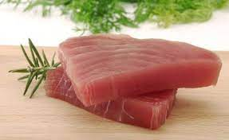

tuna

This tuna is the freshets tuna in the world bought in the fish market every morning so the costumer can enjoy the best tuna
ingredients
- tuna
- soy sauce
- butter
- salt
- pepper
Steps
- with paper dry the tuna
- season the tuna with salt an pepper
- in a pan cook the tuna in high heat
- when de tuna is seared put the butter and the soy sauce
- when the tuna is mixed with the sauce serve an enjoy